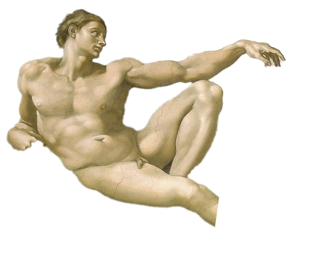

¿Qué es el arte?
El arte (del latín ars, artis, y este calco del griego τέχνη téchnē) es entendido generalmente como cualquier actividad o producto realizado con una finalidad estética y también comunicativa, mediante la cual se expresan ideas, emociones y, en general, una visión del mundo, a través de diversos recursos, como los plásticos, lingüísticos, sonoros, corporales y mixtos.
El arte es un componente de la cultura, reflejando en su concepción las bases económicas y sociales, y la transmisión de ideas y valores, inherentes a cualquier cultura humana a lo largo del espacio y el tiempo. Se suele considerar que con la aparición del Homo sapiens el arte tuvo en principio una función ritual, mágica o religiosa (arte paleolítico), pero esa función cambió con la evolución del ser humano, adquiriendo un componente estético y una función social, pedagógica, mercantil o simplemente ornamental.
